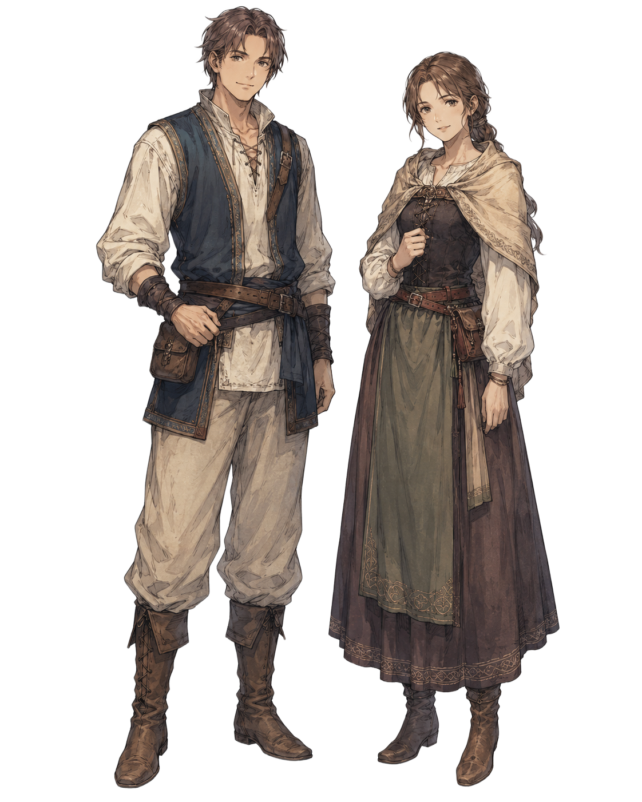
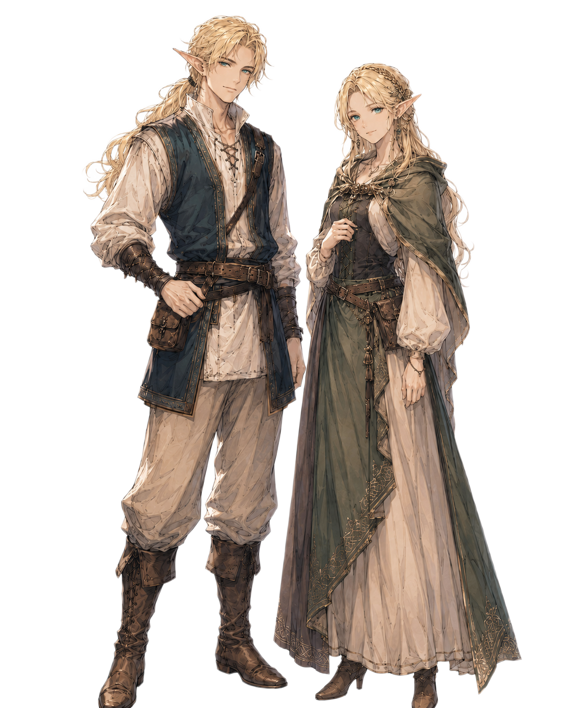
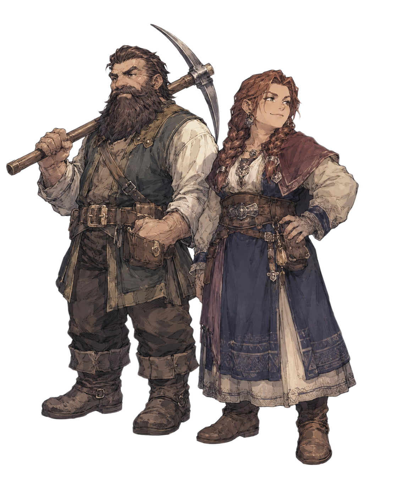
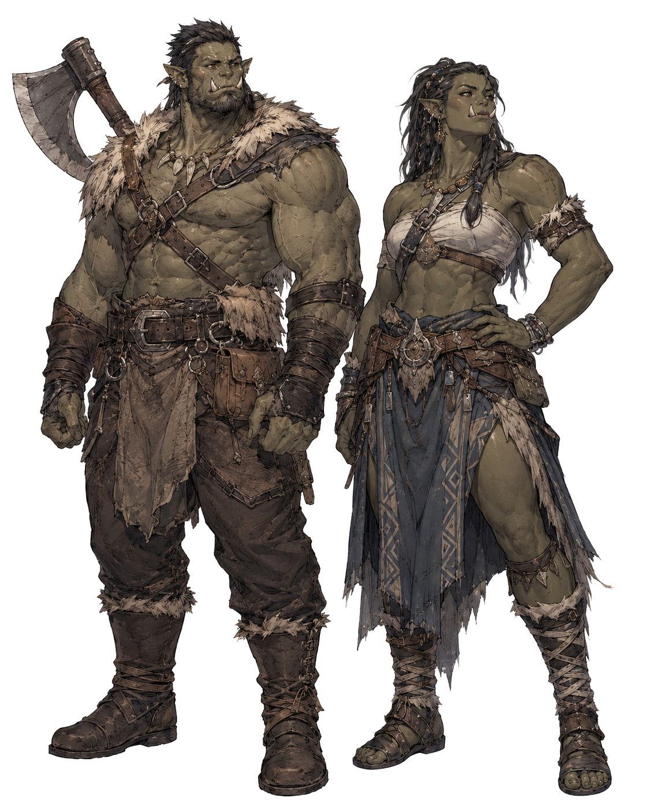
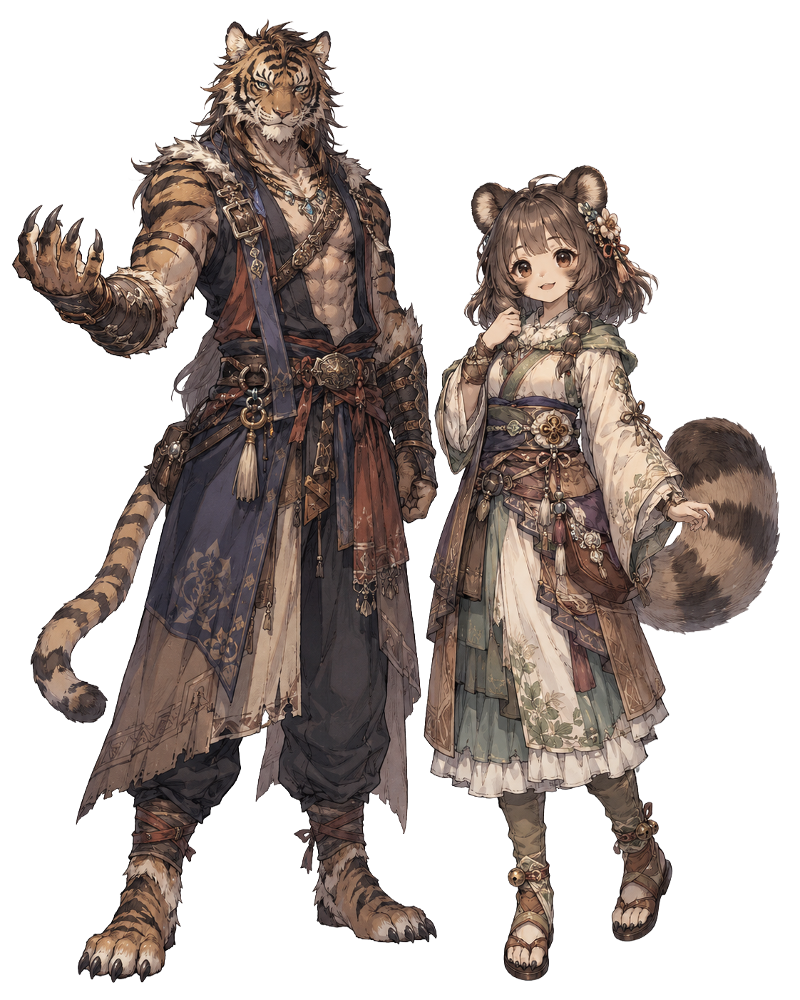
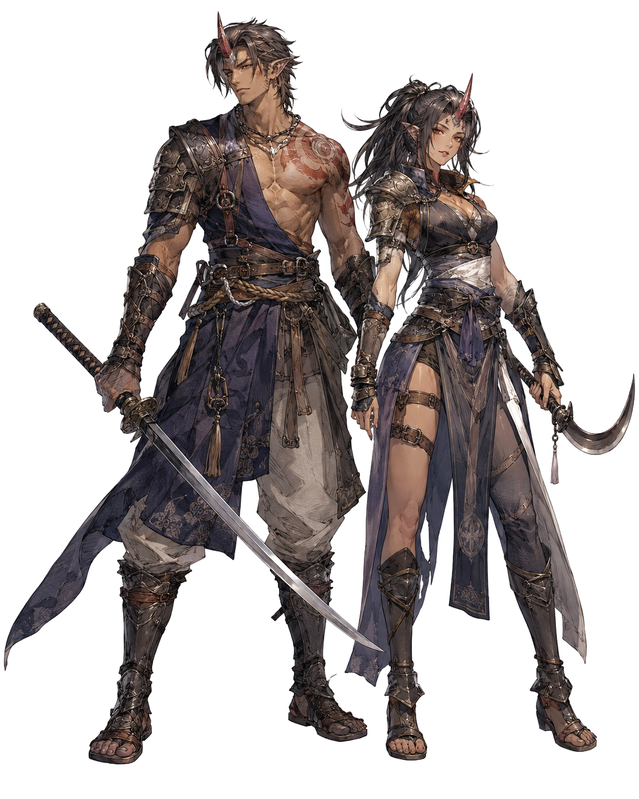

Races and Peoples
種族
人族、エルフ、ドワーフ、オーク、獣人、鬼族、ハーフリング。文化、身体的特徴、居住域を整理します。
種族資料の型
人族、エルフ、ドワーフ、オーク、獣人、鬼族、ハーフリング。。文化、身体的特徴、居住域を整理します。
詳細テンプレートを見る新しい詳細ページは、このカテゴリの entries 配下へテンプレートを複製して追加します。
-

人族
ソルグランデにおいて、最も人口の多い種族。寿命は長い者で百二十年ほどに達する。
他種族のように一つの分野へ突出した天賦を持つことは少ないが、
その代わりに環境への適応力が高く、武技、魔法、商い、農耕、工芸など、さまざまな営みを器用にこなす柔軟さを持つ。
短い生の中で多くを成し遂げようとする性質から、長寿の種族には「せっかち」と評されることも多い。
また、その寿命の短さから「短命種」、環境や時代に合わせて生き方を変える柔軟さから「適応種」と呼ばれることもある。
だがその歩みの速さこそが、人族の国々を発展させ、多くの街や文化を築かせてきた力でもある。
英雄も、賢者も、商人も、盗賊も、王も、民も――そのすべてを内包する、多様性に富んだ種族である。
詳細を見る -

エルフ
高い魔力適性を持つ長命種。
魔法の扱いに優れ、弓術にも長けた者が多い。男女ともに総じて長身で、整った容姿を持つ種族として知られている。
寿命は長い者で五百年ほどに達するが、妊娠しにくい体質のため出生率は低く、人口は決して多くない。
そのため、血族や集落の結びつきを重んじ、外の世界との関わりには慎重である。
多くのエルフは森の奥地に集落を築き、結界によって外界との境を閉ざして暮らしている。
他種族との交流は稀であり、許可なく森へ踏み入った者が彼らの里へ辿り着くことはほとんどない。
また、他種族との間に生まれたハーフエルフや、暗黒魔法や死霊術の影響によって肌が灰色に変質したダークエルフなど、いくつかの派生種も存在する。
その美しさと希少性ゆえに、心ない人攫いや闇市場の商人に狙われることもあり、エルフが外界に対して警戒心を抱く一因となっている。
詳細を見る -

ドワーフ
鉱石と金属加工に深い知識を持つ長命種。
小柄で頑健な体格をしており、身長は高い者でも百五十センチほどに留まる。
痛みに強く、酒精への耐性も高い者が多い。寿命は長い者で三百年ほどに達する。
各地に暮らすドワーフの多くは、鉱山都市カザンドールに祖を持つとされる。
そのため、鉱石の採掘、精錬、武具の鍛造に優れた者が多く、彼らの鍛えた武器や防具は各国の騎士や冒険者たちから高く評価されている。
戦闘においては、その頑強な肉体と耐久力を活かし、盾役や前衛を務めることを得意とする。
重装備を身にまとい、敵の攻撃を受け止めながら戦線を支える姿は、ドワーフ戦士の象徴ともいえる。
森と調和して生きるエルフに対し、ドワーフは山を掘り、鉱石を採り、炉を焚いて金属と機械仕掛けの道具を生み出す。
その価値観の違いから、エルフとは折り合いが悪いと語られることも多い。
ただし、すべてのドワーフとエルフが敵対しているわけではなく、互いの技術や知識を認め合う者も存在する。
詳細を見る -

オーク
筋肉質で屈強な体躯と、下顎から突き出た大きな牙を持つ種族。寿命は長い者で百五十年ほどに達する。
樵や木材加工を生業とする者が多く、建築技術にも優れている。堅牢な木造建築や橋梁の建設では高い技術を持ち、その腕前は各国からも評価されている。
見た目の威圧感とは裏腹に温厚で義理堅い者が多く、他種族とも友好的な関係を築くことが多い。
戦いを好む性質ではないが、仲間や家族を守るためであれば、その強靭な肉体と膂力を存分に発揮する。
冒険者となる者も存在するが、その数は決して多くなく、戦闘では頑丈な身体を活かした前衛として活躍する者が多い。
詳細を見る -

獣人
猫族や狼族、虎族など、獣の特徴を受け継ぐ多種多様な種族の総称。それぞれの種族によって身体能力や得意分野は大きく異なる。
猫族は優れた敏捷性と隠密行動を得意とし、狼族は群れでの連携や追跡、斥候に優れるなど、それぞれが固有の特性を持つ。
種族ごとに寿命は異なるが、多くは人族と同程度か、それよりやや短命である。
友好的で義理堅い者が多く、各地で冒険者や傭兵、商人として活躍する姿も珍しくない。
一方で、その優れた身体能力を悪用し、盗賊や犯罪者となる者も一定数存在するため、地域によっては警戒の目を向けられることもある。
詳細を見る -

鬼族
ソルグランデでは少数民族として知られる種族。額の角が特徴。
屈強な肉体と優れた身体能力を持ち、他種族と比べても高い戦闘能力を誇る。
寿命は人族やや長く、長い者でも百五十年ほど。
その力を活かして傭兵や冒険者として生計を立てる者が多いが、常に危険と隣り合わせの生き方を選ぶため、天寿を全うする者は決して多くない。
また、鬼族は戦闘に適した肉体を生まれながらに備えており、日常生活を送るだけでも引き締まった体格を維持しやすい。
そのため、特に鬼族の女性は他種族の女性から羨望の眼差しを向けられることも少なくない。
さらに、鬼族は種族の存続本能が非常に強く、男女ともに子孫を残そうとする意識が働くため性欲が強い。
そのため恋愛や結婚に対して積極的な者が多く、他種族との間に子をもうける例も珍しくない。
詳細を見る -

ハーフリング
人族よりも小柄な体格を持つ種族。身長は百二十センチ前後と小さいが、器用さと忍耐力に優れ、寿命は長い者で百五十年ほどに達する。
農耕や牧畜、料理を得意とし、自然豊かな土地で穏やかな暮らしを営む者が多い。
その知識と経験は豊富で、他種族へ農業や牧畜の技術を教える姿も各地で見られる。
陽気で人懐っこい性格の者が多く、祭りや宴を何よりも好む。
酒宴では種族の垣根を越えて肩を組み、歌や踊りで場を盛り上げる姿は、ハーフリングの風物詩ともいわれている。
争いを好まない平和主義者だが、大切な家族や仲間を守るためには勇気を振り絞って立ち向かう。その誠実で温かな人柄から、多くの種族に親しまれている。
詳細を見る